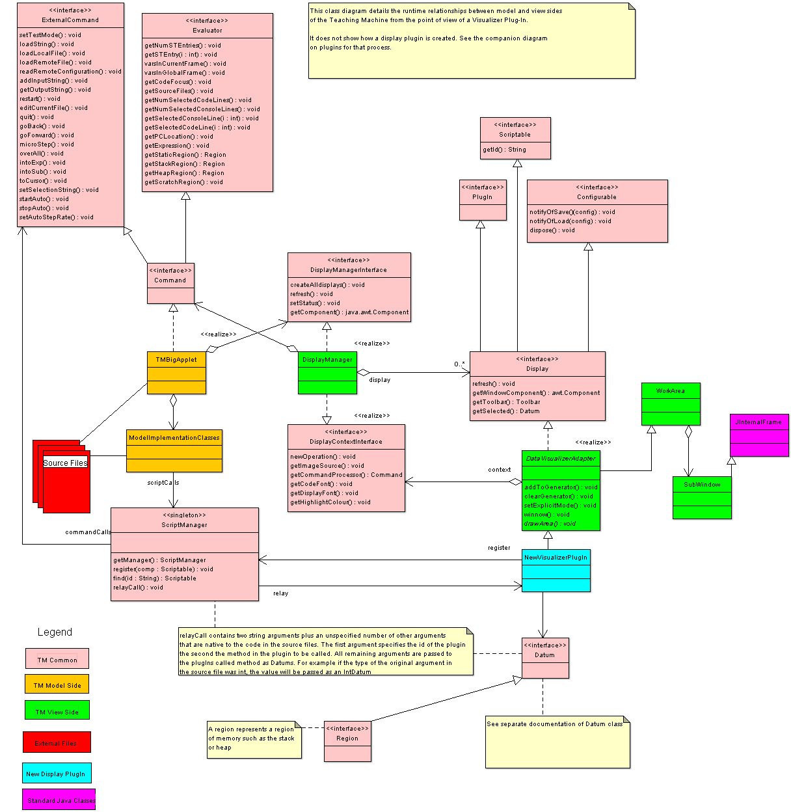
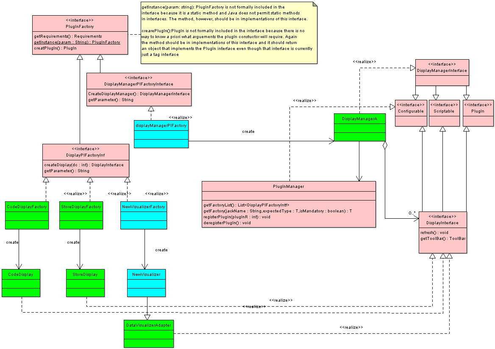

Data Visualizaion PlugIns are a specialized version of Display PlugIns
This is a somewhat ammended version of a more general document
which describes two approaches to developing visualization plugins. For
the QuizGenerator project, all
we anticipate needing is the instrumented approach.
To make the facilities of the Teaching Machine available to other researchers without opening up the code base. The alternative is to release the TM as open source which we are reluctant to do only because it would turn us into code managers instead of code developers. Plugins make TM resources freely available without impairing the integrity of the existing code base.
So far we see TM Visualization plugins as being of two types:
Simply instrument some data set developed while the Teaching Machine is running any standard C++ or Java example. The visualization monitors the data. The changing state of the data as the TM steps through an example drives the visualization. Instrumented visualizations can be run with standard examples. As an example, we are planning to build a bar display that will show an array of ints as a set of bars of lengths proportional to the int value and use it to demonstrate sorting algorithms. Such displays are well known. The point here is to be able to easily integrate such a demo into the already highly integrated TM /Webwriter++ environment.
These visualizations provide an interface library that is called from the code example. Thus, unless a parallel visualization library exists, in the C++ or Java languages, these visualizations will only run examples written explicitly to work with the library. The current example of this kind of display is a window to open standard image files (jpeg, png, etc.) and make them available via a simple interface as simple 2D arrays of pixels which can be readily manipulated using standard code. Once the manipulations are performed the transformed pixels are sent back to the display where they can be shown.
Instrumented visualizations are more general, allowing an instructor to use any standard example (so long as it can be handled by the TM in the first place). Instruction driven visualizations are potentially more powerful. The addition of scripting now allows instructors to manipulate instrumented visualizations.
There are three distinct pieces of technology required to implement all this. The first is the plug-in system itself. Its role is to allow a new plug-in (of any kind) to be incorporated into the Teaching Machine. This means that if the TM is integrated into a website, the new plug-in will be incorporated automatically and that it can have its configuration controlled via the TM's standard configuration engine. All of this can be accomplished without recompiling the TM or even having access to its source code. The plug-in system is described in a separate document. The plug-in system has been built and tested.
The second piece is the incorporation of an interface into a plug-in to allow it to be made visible to the code as a library. This has been built and tested for primitive arguments only, using Java only. An extension to bridge such an interface over to C++ is planned for this year. Extension to structured data is an intermediate priority and may or may not be accomplished in 2007, depending on demand. This technology is required only for driven mode and so is not needed for the quizGenerator project.
The final requirement was to be able to import data into a
visual
plugin in order that it may be displayed - a selection system. This has
now been developed.
Summarizing, to create an instrumented display one builds a plug-in and registers it with the TM, then creates a generator by selecting a desired set of datums to monitor, then lets the evolution of the datums as the TM runs drive the display.
The diagram below shows how the plugIn fits into the TM at run-time. The TM follows the classic Model-View pattern with most of the code being either in the model or the view. In the diagram, only those parts of the TM that are relevant to a new Visualization plugin are shown (model classes in orange, view in green).
In addition there are a number of common classes, shown in magenta. In the diagram, model classes are represented only by TMBigApplet, which is the central class in the TM, and one other block standing in for all other classes. There is a little more detail on the view side as that's where the new display is to plug in. Even so, only those classes directly related to it are shown. To see how plugins are created, see the next section.
Every display in the TM is derived from the class WorkArea and each WorkArea object has a related SubWindow object which is a kind of JInternalFrame. SubWindows are just that, visible windows that are restricted to operate within the main TM window. Each has a single WorkArea which is basically a single scrollPane where the drawing gets done. (Although logically it would seem that SubWindows have WorkAreas, the two are actually in a one-to-one relationship. From the point-of-view of displays it is more convenient to think of WorkAreas as having a SubWindow in which they are contained.)
A special abstract DataVisualizerAdapter class has been created to provide
winnow(), which provides a filtering service) but which may be over-ridden.drawArea method which must be provided by visualizers to create the actual visualization.New visualizer plugins should be derived from the DataVisualizerAdapter class.
The DisplayManager is itself a plugin. Effectively, it plugs into the TMBigApplet and all the displays plugin to it. This is to allow a different DisplayManger to be plugged in with perhaps quite different layout stategies. Because of this layered communications, it has separate top and bottom interfaces, each of which defines a two way flow. Its interface to the displays is known as a DisplayContextInterface because the DisplayManager provides the context for the displays. In turn the displays are defined by a DisplayInterface. Notice that across these two, command flow only goes one way, from DisplayManager to Display. The context only provides query callbacks.
From the point of view of the quizGenerator, classes on the model side read in the source files containing examples to be run in the TM. The TM compiles the examples and then runs them. Normally running is controlled by mouse clicks but a new set of comands are being added to the ExternalCommand interface to support autorunning which the quizGenerator needs.
Commands for the TMBigApplet can come from the GUI (mouse clicks and menus), from WebWriter (that is from JavaScript calls) or from the ScriptManager. The TMBigApplet may mediate the command streams (for example, preventing commands from the GUI while autorunning, except for stopping or rate setting).
Most interfaces in the TM are kept in a special Interfaces package, are public and thus available throughout the entire system. The ScriptManager is a Singleton class, also available universally, as it is potentially able to script any part of the TM (presuming it makes sense to do so).
The plugin systen allows new modules to be added to the TM without recompiling the TM. Indeed, the only thing required is the tm.jar file. The disgram below shows the relevant classes and interfaces to developers of DataVisualization plugins at creation time.

Colour coding is the same as in the run-time diagram. Each plugIn in the TM has an associated plugInFactory object which exists soley to create that kind of plugIn. Thus the CodeDisplayPIFactory creates the CodeDisplay and the StoreDisplayPIFactory creates the four store display objects. Similarly a new visualizer requires an associated new visualizer factory as well. Even the DisplayManager is a plugIn, allowing us to substitute different display managers in the future or even choose between different ones.
It is recommended (though not mandatory) that new Visualizer plugIns specialize the DataVisualizerAdapter which provides a number of services common to any data visualizer (such as how to create the generator - the set of datums to be visualized).